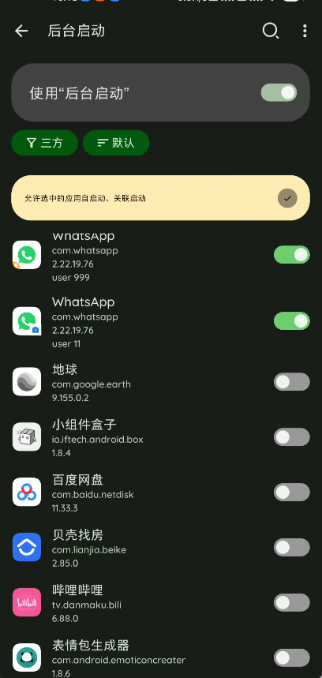
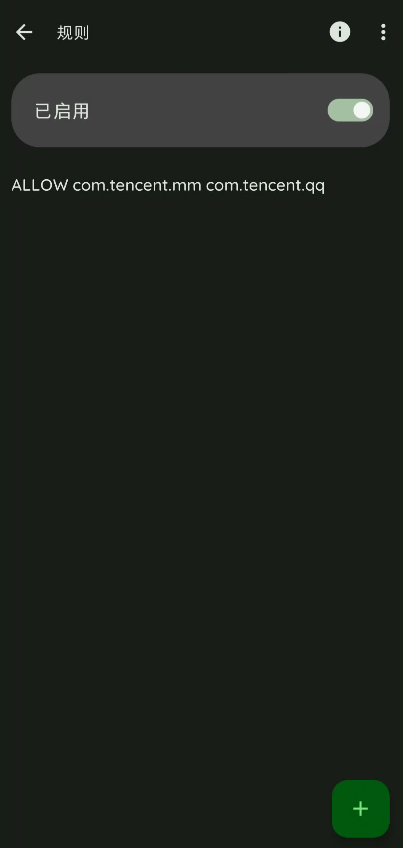

功能介绍
Thanox的后台启动功能可以有效的拦截app在后台被偷偷启动（通常称为：关联启动）的问题。
使用说明
首先需要开启“后台启动”功能的总开关。
默认情况下Thanox允许所有应用后台启动（有些ROM自带的安全管家可能也会拦截一些应用的后台启动，默认情况下Thanox不做任何干涉），如果你希望阻止某个App的后台启动，那么只需要在下方app列表中关闭该应用的开关即可。
注意：阻止某些应用的后台启动，可能会导致某些App无法正常使用，例如华为运动健康需要启动HMS Core，如果你阻止了HMS Core的后台自启，那么运动健康可能无法正常登录。

允许与阻止的原则
Thanox会根据用户配置、App运行状态、规则等综合因素来决定是否要拦截某个app的关联启动。如果要查看一个app为什么被阻止或允许了启动，可以进入后台启动功能，右上角菜单查看启动记录，点击chart中间的大数字，可以进入启动记录详情页面。

图中可以看到每条启动记录的处理结果（允许或阻止）和原因，其中BYPASS_XXX代表允许的原因，BLOCKED_XXX代表阻止原因。
下面是BYPASS和BLOCK的对照表：
| 允许原因 | 含义 |
|---|---|
| BY PASS WHITE LISTED | 目标应用为白名单应用 |
| BY PASS CALLER WHITE LISTED | 调用方应用为白名单应用 |
| BY PASS ACCESSIBILITY SERVICE | 目标应用开启了辅助功能 |
| BY PASS BAD ARGS | Thanox内部出问题了，那就允许吧 |
| BY PASS START BLOCKED DISABLED | 没打开后台启动功能，当然允许 |
| BY PASS UI PRESENT | 目标应用在前台展示，也要允许 |
| BY PASS DEFAULT IME SERVICE | 目标应用是默认输入法，要允许 |
| BY PASS PROCESS RUNNING | 目标应用已经在运行中了，要允许 |
| BY PASS SAME CALLING UID | 应用自己调用了自己的组件进行启动，要允许，也说明该应用已经在运行中 |
| BY PASS SMS APP | 短信应用 |
| BYPASS USER RULE | 由于后台启动规则而允许 |
| BY PASS DEFAULT | 未命中任何分支，默认为允许 |
| 阻止原因 | 含义 |
|---|---|
| BLOCKED STRUGGLE | 目标应用刚被杀死，短时间阻止其再次启动，主要用来对抗一些黑科技 |
| BLOCKED IN BLOCK LIST | 目标应用被用户关闭了后台启动 |
| BLOCKED COMPONENT IS DISABLED | 要启动的组件已经被禁用了，例如某个服务 |
| BLOCKED STANDBY | 目标应用被开启了乖巧模式 |
| BLOCKED USER RULE | 由于后台启动规则而阻止 |
| BLOCKED BLOCK API | 通过block API阻止 |
规则
后台启动规则可以更精确的控制app的后台启动行为，例如；通过规则，可以只允许微信在后台被QQ启动而禁止被其他app启动。
规则语法
规则语法为两个部分：
-
行动；行动包括两种，分别是：
ALLOW（允许）、DENY（拒绝） -
角色；包括启动者app和目标app，分别为对用两个app的包名，也可以用
THIS表示某个应用自己。
举例说明：
如果想允许微信启动QQ，可以添加规则：ALLOW com.tencent.mm com.tencent.qq；
如果想允许Android系统启动所有应用，可以添加规则：ALLOW android *；
如果想要拒绝任何应用启动微信：DENY * com.tencent.mm。
便利：
支持一些常用的名称代替角色，目前可用代号包括：SHELL，ROOT。
例如，如果想允许Shell启动任何QQ：ALLOW SHELL com.tencent.qq
